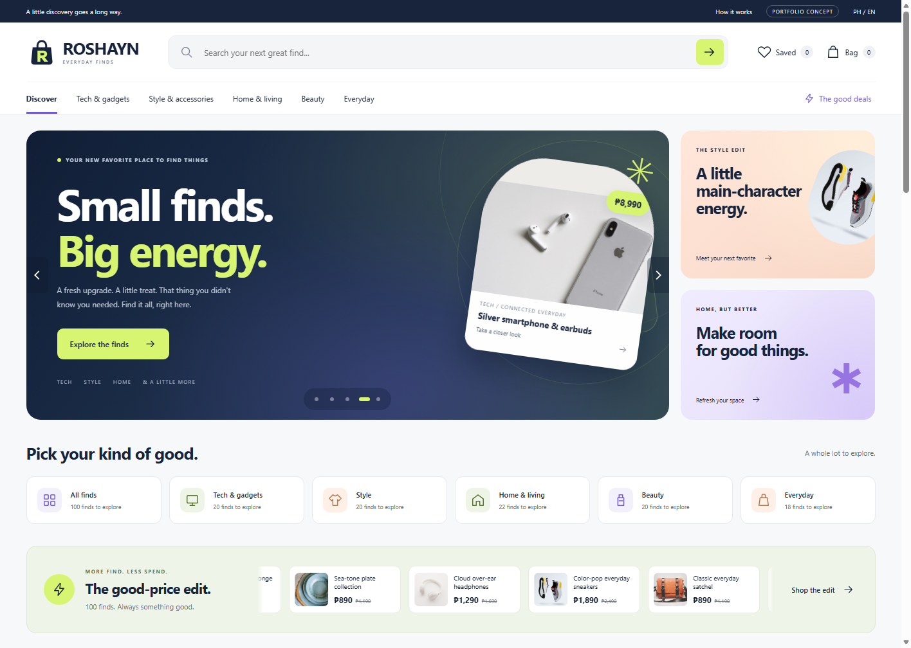
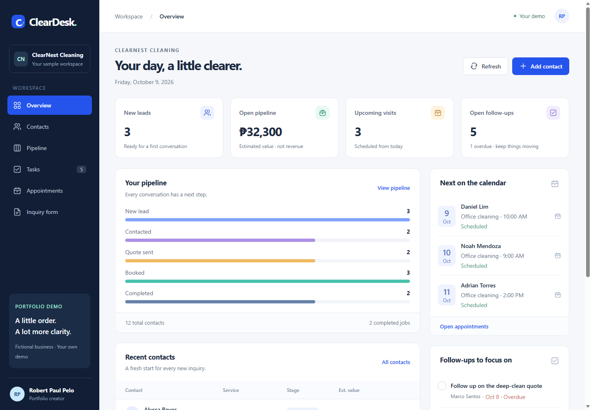

Understand.
Get clear on the offer, the audience, and the next step.
Audience JourneyI build thoughtful websites and clearer customer journeys, from the first click to the next conversation.
Websites and a CRM demo you can open and explore.
See the work ↗

The person behind the projects, and how I work.
Useful interfaces. Clear information. A next step that makes sense.
Connect the page with the customer journey.
Start with the part that needs attention.
SELECTED WORK
Original websites, a working CRM, and a proposed workflow. Open a card to explore the details.
SERVICES
Design, structure, and practical next steps. Built around what your project needs.
THE APPROACH
Give every part of the experience a purpose.
Get clear on the offer, the audience, and the next step.
Audience JourneyBring the page structure and planned interactions together.
Design SystemsCheck the experience on desktop and mobile. Improve the details.
Test HandoffGOHIGHLEVEL / WORKFLOW BLUEPRINT
A proposed journey connecting an inquiry, a contact record, a follow-up, and an appointment.
Planning blueprint. A live GoHighLevel account, messaging service, and booking calendar are not connected.
ABOUT
I connect thoughtful web design with practical thinking about the customer journey.
My focus is GoHighLevel, website design, and the systems that help people move from an inquiry to a useful next step.
This portfolio brings together my original website concepts, the ClearDesk CRM demo, and a proposed automation blueprint. Explore the working examples to see how I approach readable layouts and useful interactions.
FAQS / CONTACT
A new website, a clearer follow-up, or a customer journey that needs attention? Start with a conversation.
FAQS
Responsive websites, funnel and landing-page design, CRM organization, workflow planning, and refinement. The projects show working web demos; the GoHighLevel workflow is a proposed blueprint.
Yes. ROSHAYN and ClearDesk have public demos. ClearDesk uses fictional records in a separate browser workspace. VELUNE is shown as a design case study.
The workflow here is an interactive plan. A live setup would need account access, agreed requirements, and testing before activation.
Scope comes first. Share what you need, the existing setup, and your preferred timeline so the work can be discussed clearly.
Choose Book a call to open Calendly, select an available time, and follow the booking steps. You can also email robertpaulpelo@gmail.com.
BOOK A CALL
Pick a time that works for you. A first conversation to explore your idea, your goals, and the next step.
Prefer email? robertpaulpelo@gmail.com
Find your way around Robert's work.